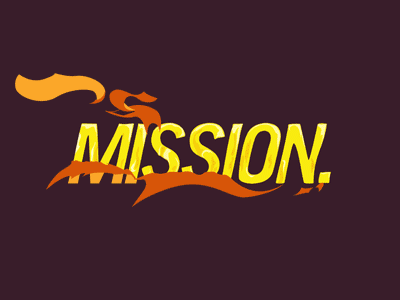
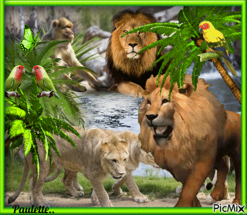

ZOLOOGICO

Misión
Crear un espacio recreativo familiar fomentando valores para una buena salud física y mental de los habitantes.

vicion
Consolidarnos como un centro de educación, recreación, investigación y conservación de la fauna silvestre.Ser lugar de esparcimiento y convivencia en donde se promueva la integración familiar.
